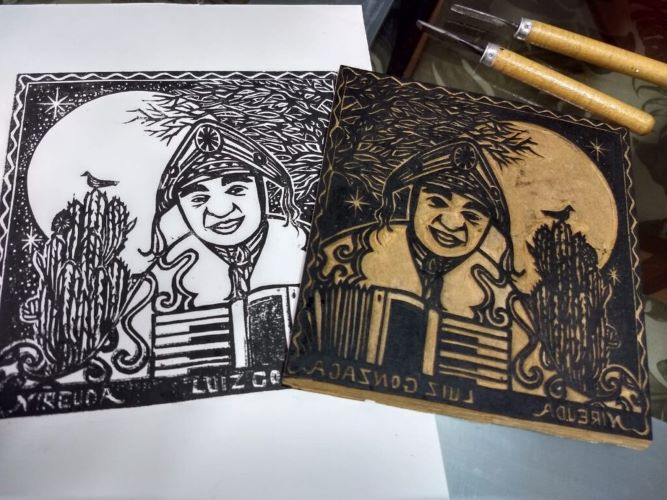
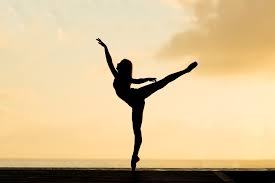
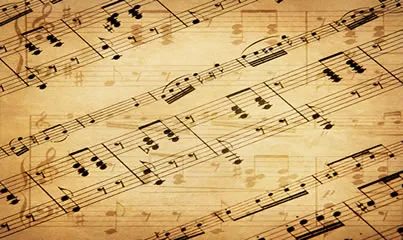

O Que é As Linguagens da Arte?
As Linguagens da Arte referem-se aos diferentes modos de expressão artística que os seres humanos utilizam para comunicar ideias, emoções, histórias e experiências. Cada forma de arte tem suas próprias caraterísticas, técnicas e meios de expressão.
Quais São as Linguagens da Arte?
As Linguagens da Arte trabalham em 5 principais linguagens, nas quais são:
- Artes Visuais;
- Audiovisual;
- Arte Cênica;
- Dança;
- Musica;
Artes Visuais
As Artes Visuais referem-se a formas de expressão artística que utilizam principalmente o sentido da visão para transmitir mensagens, emoções e ideias. Essas formas de arte exploram o uso de elementos visuais como cores, formas, linhas, texturas e espaço para criar obras que são percebidas pelo espectador visualmente. Exemplos de linguagens visuais incluem pintura, escultura, desenho, gravura, fotografia, design gráfico, entre outras.
Exemplo de Artes de Visuais.
Audiovisuais
Audiovisual refere-se a formas de comunicação que combinam elementos visuais e sonoros para criar uma experiência completa e imersiva. Essas produções utilizam imagens em movimento (como vídeos, filmes e animações) juntos com sons (como diálogos, música e efeitos sonoros) para contar histórias, transmitir informações ou evocar emoções. Exemplos de obras audiovisuais incluem filmes, programas de televisão, videoclipes, documentários e vídeos de internet.
Exemplo de Audiovisual.
Artes Cênicas
AS artes cênicas são uma expressão dinâmica e essencial da criatividade humana, englobando diversas formas como teatro, dança, ópera, circo e performance art. Cada uma dessas disciplinas utiliza habilidades dramáticas, musicais e físicas para criar experiências profundas e envolventes.
Exemplo de arte cênica.
A Dança
A dança é uma forma de expressão artística que utiliza o movimento do corpo de forma rítmica e coordenada, muitas vezes acompahada de música. É uma das mais antigas formas de arte, encontrando-se em culturas de todo o mundo desde tempos ancestrais. A dança pode transmitir uma apla gama de emoções, contar histórias, celebrar rituais e expressar tradições culturais únicas.
Exemplo de Dança.
Musica
A música é uma forma de arte que combina sons e silêncios organizados ao longo do tempo para criar composições que podem evocar uma ampla gama de emoções e atmosferas. Utilizando elemntos como melodia, harmonia, ritmo e timbre, a musica é uma linguagem uninversal que transcende barreiras culturais e linguísticas.
Exemplo de muisca.